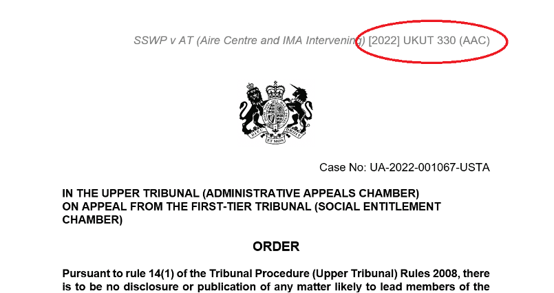

Front page formatting
The front page of a judgment is where the majority of formmating issues can arise.
Headers and Footers
Usually elements contained in the header or footer will not show up in the html version of the judgment.
Any information vital to the judgment should therefore not be put solely in the header or footer.
Example SSWP v AT [2022] UKUT 330 (AAC)
The parser requires a neutral citation number in order to register a judgment properly so this could also prevent the document from being processed.
Court Crest / Court Details
If your judgment requires a crest, we recommend using a PNG format. This is because it is web friendly format so will ensure the image appears in the html of the judgment.
Crest images should be on their own separate line in a judgment. Styling issues can occur if positioned with text or other elements.
If we look at the judgment in Word, we can see that the crest has been placed in the centre of the page, between the court and the case number: